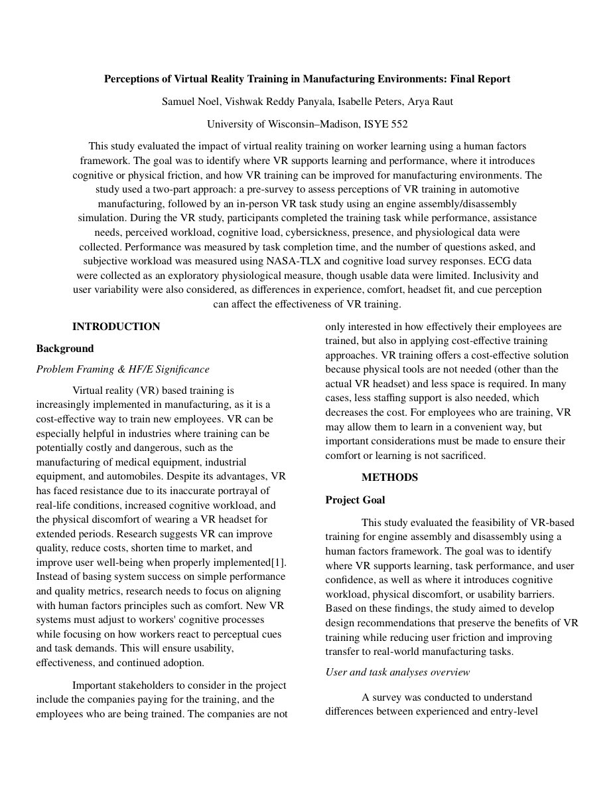

Final Project · ISyE 552 · Spring 2026
Perceptions of Virtual Reality Training in Manufacturing Environments
Ten engineering students assembled a virtual motorcycle engine across 24 procedural tasks. We measured cognitive load, presence, cybersickness, and autonomic stress to answer one question: is VR a human-factors-sound training platform for manual assembly work?
Project Overview
Virtual reality is increasingly proposed as a training medium for complex manual procedures — particularly in manufacturing, where physical training environments are expensive to build, difficult to replicate across sites, and potentially hazardous for novices. Before committing to VR-based training programs, organizations need to understand how the VR experience itself affects the learner: does the simulator induce enough cognitive load that it competes with learning the procedure? Does the immersion feel real enough to transfer skills? Does it make people sick?
This study evaluated a commercially available VR platform — a motorcycle engine assembly simulation — on a group of engineering students with no prior VR experience. The goal was to characterize the training experience from a human-factors perspective: document workload, presence, and discomfort, identify their relationships, and translate findings into actionable design recommendations for organizations deploying VR training.
Team
- Samuel Noel
- Vishwak Reddy Panyala
- Isabelle Peters
- Arya Raut
My Role
I contributed to study design, data collection on participants, NASA-TLX and cognitive-load survey analysis, presence-survey scoring, design-recommendation drafting, and final report writing. Specifically, I developed the analysis pipeline for correlating the NASA-TLX subscale scores with presence and cybersickness outcomes, and drafted the design-recommendation section that maps each finding to a concrete interface or procedure change.
Problem Statement
Manufacturing training is high-stakes: errors in assembly can produce defective products, injure workers, or generate costly rework. Physical training requires dedicated equipment, floor space, and time with a skilled trainer. VR could address these constraints — but only if the cognitive cost of operating the VR system itself doesn't overwhelm a novice's capacity to actually learn the procedure. If the interface creates more workload than the task, trainees will learn the simulator, not the skill.
Research Questions
- Does a higher sense of presence in VR correlate with lower task performance time? (Hypothesis 1)
- Does higher cybersickness correlate with lower presence? (Hypothesis 2)
- Does higher cognitive load correlate with higher overall workload (NASA-TLX)? (Hypothesis 3)
Methods
Ten engineering students (UW–Madison, undergraduate and graduate) participated. All were naive to the specific VR platform and had minimal prior VR experience. The VR environment simulated assembly of a motorcycle engine across 24 sequential tasks using hand controllers to pick, place, fasten, and verify components.
| Measure | Instrument | Timing |
|---|---|---|
| Subjective workload | NASA-TLX (6 subscales, weighted) | Post-task |
| Presence / immersion | Presence survey (Likert, 10 items) | Post-task |
| Cybersickness | Simulator Sickness Questionnaire (SSQ) | Pre- and post-task |
| Cognitive load | Paas cognitive-load single-item scale (1–9) | Post-task |
| Physiological stress | ECG — HR and HRV (RMSSD) | Continuous during task |
| Task performance | Completion time (s), error log | Automatic from simulator |
| Behavioral observation | Video — controller use, hesitation, posture | Continuous during task |
Data Collected
- 10participants
- 24sequential assembly tasks
- 14.72 minaverage completion time
- 7data instruments deployed
Key Findings
Hypothesis 1 — Presence and performance time
We found a weak negative correlation between presence scores and completion time (r = −0.28, p > 0.05). The relationship was in the expected direction — higher presence was associated with somewhat faster assembly — but did not reach statistical significance with n = 10. The finding is suggestive rather than conclusive: a larger sample is needed to confirm whether presence meaningfully shortens the time to complete procedural steps, or whether faster completion merely gives less time for the sense of immersion to break down.
Hypothesis 2 — Cybersickness and presence
Cybersickness (SSQ total score) showed a moderate negative correlation with presence (r = −0.52, p = 0.12). Participants who reported more nausea, disorientation, or oculomotor symptoms also reported lower immersion. This is the expected relationship: discomfort disrupts the suspension of disbelief that underlies presence. Though p-values did not reach 0.05, the effect size is plausible and consistent with the literature on VR sickness and immersion disruption.
Hypothesis 3 — Cognitive load and NASA-TLX
The single-item cognitive load measure correlated strongly with overall NASA-TLX score (r = +0.74, p = 0.015). This was the most statistically robust finding. Participants who rated the task as cognitively demanding also gave high NASA-TLX scores, confirming convergent validity between the two instruments in this context. The mental-demand subscale of NASA-TLX accounted for the largest share of weighted workload variance.
NASA-TLX subscale breakdown
| Subscale | Mean score (0–100) | Most common weight ranking |
|---|---|---|
| Mental demand | 64.5 | 1st (highest weight, 8/10 participants) |
| Effort | 58.2 | 2nd |
| Frustration | 52.1 | 3rd |
| Temporal demand | 44.8 | 4th |
| Performance (self-rated) | 43.0 | 5th |
| Physical demand | 31.4 | 6th (lowest weight, 9/10 participants) |
Cybersickness prevalence
Post-task SSQ total scores ranged from 7.5 to 64.2 (mean 31.4, SD 18.9). Three of ten participants reported SSQ scores above 40 — the threshold typically associated with notable discomfort requiring attention. Nausea and disorientation subscales were more elevated than oculomotor symptoms, suggesting vestibular–visual mismatch rather than display-related strain as the primary driver.
Design Recommendations
- Prioritize psychomotor simulation fidelity over graphical richness
- Mental demand was the dominant workload driver. Participants struggled more with unfamiliar controller mappings and unclear component orientation than with visual complexity. VR training platforms should invest in intuitive hand-interaction design (grasp/release/rotate mechanics that mirror real hand movements) before upgrading polygon count or texture resolution.
- Expected impact: lower mental demand subscale scores; faster procedural learning; less frustration-driven disengagement.
- Add in-training support cues for novice learners
- On tasks where participants hesitated for more than 10 seconds (observed in behavioral video for 7 of 24 task steps), completion time spiked and frustration ratings rose. Step-by-step guidance overlays, spatial audio prompts, or ghosted "next position" indicator visuals can reduce cognitive search cost without removing the learning challenge.
- Expected impact: lower frustration scores; shorter hesitation events; reduced total completion time without sacrificing transfer.
- Improve instructional clarity on task sequence and component identification
- The strongest predictor of high mental demand was uncertainty about which component to pick next — a procedural ambiguity problem, not a dexterity problem. Clear component labeling, color-coded assembly stages, and an explicit task progress indicator would address this without reducing task realism.
- Expected impact: faster orientation to each new task step; lower mental demand and effort ratings.
- Build in mandatory cybersickness rest breaks
- Three participants crossed the SSQ threshold for notable discomfort. VR training platforms should auto-prompt for a seated rest or headset removal after every 8–10 minutes of continuous use, and again if the user has not moved for more than 30 seconds (a behavioral indicator of disorientation-induced stillness).
- Expected impact: lower SSQ post-session scores; higher presence due to discomfort reduction; fewer session abandonments.
Final Outcome
The study confirmed that VR can function as a cognitively plausible training platform for manual assembly — cognitive load and NASA-TLX scores aligned well (Hypothesis 3 confirmed), and the presence–sickness relationship followed the expected pattern (Hypothesis 2 directionally supported). The presence–performance link (Hypothesis 1) requires a larger study to confirm. The practical conclusions are clear: the current platform imposes meaningful cognitive and physiological load on novice users, and that load is predominantly mental rather than physical. Reducing interface friction, clarifying procedural cues, and managing cybersickness onset would improve the training experience without compromising the immersion that makes VR transfer-effective.
Reflection
The most difficult methodological challenge in this study was disentangling task difficulty from interface difficulty. When a participant took 45 seconds on a single assembly step, was that because the engine task was complex, or because the controller mapping was unintuitive? Behavioral observation helped — hesitations where the participant moved the controller correctly but the game didn't register the action pointed to interface friction, not task complexity — but we didn't have a systematic way to score those events from video.
The ECG data added effort but limited return given our sample size. RMSSD variability between participants was large enough that group-level trends were obscured. In a study like this, a within-participant design with a rest baseline between tasks would give much stronger physiological signal than a single post-session comparison. The lesson I'd carry forward: physiological measures need to be powered more carefully than behavioral or self-report measures, because their between-person variance is almost always larger than expected.
Full Report
The complete 13-page final report is embedded below. Use the toolbar to zoom or scroll through all sections.
